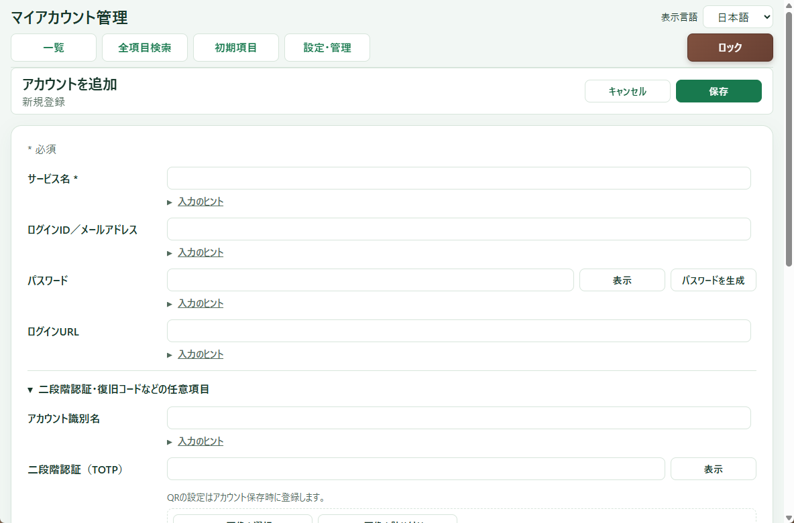
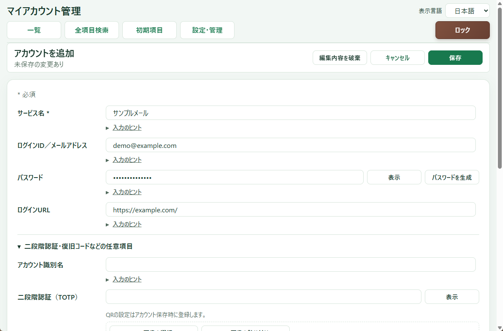

07アカウントを追加
サービスのログイン情報を1件ずつ登録します。
手順一覧を開く（4手順）
1［アカウント追加］を押す
一覧右上の緑色のボタンを押します。

2基本項目を確認
「アカウントを追加」画面で入力する欄を確認します。

3情報を入力
サービス名を必ず入力し、必要なログイン情報を入れます。

4［保存］を押す
「アカウントを保存しました。」と表示されたら、［×］で閉じます。

サービスのログイン情報を1件ずつ登録します。
一覧右上の緑色のボタンを押します。
「アカウントを追加」画面で入力する欄を確認します。

サービス名を必ず入力し、必要なログイン情報を入れます。

「アカウントを保存しました。」と表示されたら、［×］で閉じます。